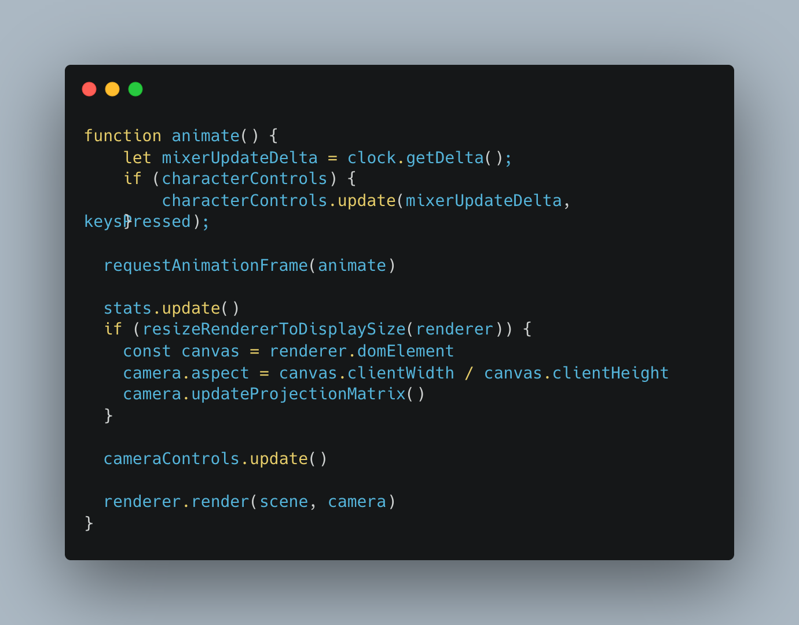

Animazioni
Per la gestione delle animazioni, ho utilizzato la classe AnimationMixer fornita da Three.js. Inoltre, ho collegato al modello delle animazioni direttamente dal sito di Mixamo.


Il progetto 'Super Mario 64 in WebGL' è stato realizzato come prova finale del corso "Fondamenti di Computer Graphics M". L'obiettivo del progetto è quello di sviluppare un'applicazione web interattiva con scena tridimensionale, utilizzando HTML5, CSS e Three.js.
Il risultato del progetto è le realizzazione di una stanza del gioco Super Mario 64, coerentemente con quanto fatto nel modulo 1
Per eseguire il progetto
$
cd
project
$
npm
install
$
npm run
dev
assets
directory che contiene tutte le immagini, i file .glb e file obj necessari alla realizzazione della scena.
style
contiene i fogli di stile. Per conoscenze e comodità è stato utilizzato il framework TailwindCSS, che ha velocizzato il processo di realizzazione dello stile del sito.
src
cartella sorgente che contiene la logica dell'applicazione.
Scelta progettuale
Per rendere il codice meglio strutturato e fornire una efficienza maggiore nella gestione delle risorse, sono stati utilizzati gli strumenti Typescript e Vite.
Di seguito viene mostrata la struttura della directory src
Per la realizzazione del progetto è stato seguito il principio di separazione previsto dal clean code, in questo modo ogni classe esegue soltanto ciò che è di sua competenza.
La classe scene agisce come orchestratore: le classi vengono inizializzate e utilizzate al suo interno.
Breve spiegazione di cosa si occupa ogni file in breve:Character Controls classe che permette di gestire i movimenti del soggetto (Mario) e le animazioni FullScreen gestisce il passaggio di contesto a fullScreen e viceversa Helpers Gestisce gli helpers di Three.js (Grid, axis e lights) Responsiveness rende il sito responsive Controls gestisce la camera della scena e i controlli (Orbit Controls)Light gestisce le luci della scenaObjects si occupa del caricamento e della gestione dei model 3D Scene orchestratore e punto nevralgico dell'applicazioneL'interfaccia dell'applicazione rappresenta Mario 64 dentro la stanza degli specchi.
Per il controllo delle impostazioni della scena, è stata utilizzata la libreria lil-gui, in quanto più leggera rispetto a dat.gui. Grazie a questa è possibile gestire le impostazioni della camera, degli helpers, delle bump map, l'attivazione/disattivazione delle ombre e la gestione delle luci.
Riguardo l'interazione con l'utente, può muovere Mario nella scena in diversi modiIDLE
La funzione init() si occupa di creare tutto il necessario:
Si occupa di gestire la scena frame per frame, aggiornando i parametri di posizione del giocatore le sue animazioni. 
Quello che con WebGL base richiedeva un po' più di complessità quanto a implementazione, con Three.js è estremamente semplificato, riducendosi alla modifica del parametro castShadow sia per le mesh che per le luci.
Nel caso in cui una mesh debba ricevere l'ombra proiettata da un'altra mesh si deve modificare il parametro receiveShadow.
Abilitando i parametri di castShadow e receiveShadow su tutte le mesh presenti nella scena, il carico computazionale sulla GPU aumenta, portando a un frame rate più basso.
Un'ottimizzazione basilare è quella di ridurre il numero di mesh che ricevono l'ombra: così facendo si perde di realismo della scena ma si ottiene una fluidità maggiore, preferibile in un videogioco.
Per rendere la scena il più realistica possibile, sono state applicate diverse proprietà ai materiali, in base alla loro "natura". Al pavimento è stata data una proprietà riflettente della luce più alta rispetto al tappeto, la cui luce viene attenuata.
Questa soluzione è stata possibile grazie alle proprietà dei materiali shininess e reflectivity.
Per la gestione delle animazioni, ho utilizzato la classe AnimationMixer fornita da Three.js. Inoltre, ho collegato al modello delle animazioni direttamente dal sito di Mixamo.
Per la realizzazione del progetto, oltre alle slide e al codice visto durante il corso, è stato fatto riferimento ai seguenti articoli: